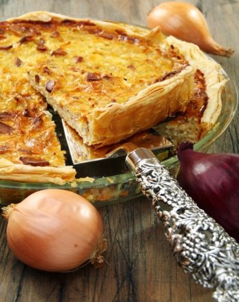

Tarte aux oignons
Ingrédients
×
- 1 kg d'oignons
- beurre
- sel
- poivre
- 20 cl de crème fraîche
- 2 oeufs
- 1 pâte brisée

Préparation
Étape 1
Peler 1 kg d'oignons et les couper en rondelles. Les fondre dans du beurre sans coloration, avec du sel et du poivre.
Étape 2
Battre 20 cl de crème fraîche avec 2 oeufs, saler, poivrer, puis ajouter les oignons.
Étape 3
Verser sur 1 pâte brisée et cuire 25min à 210ºC.
Résumé
1 kg d'oignons
beurre
sel
poivre
couper en rondelles fondre
20 cl de crème fraîche
2 oeufs
Battre
1 pâte brisée
cuire 210ºC